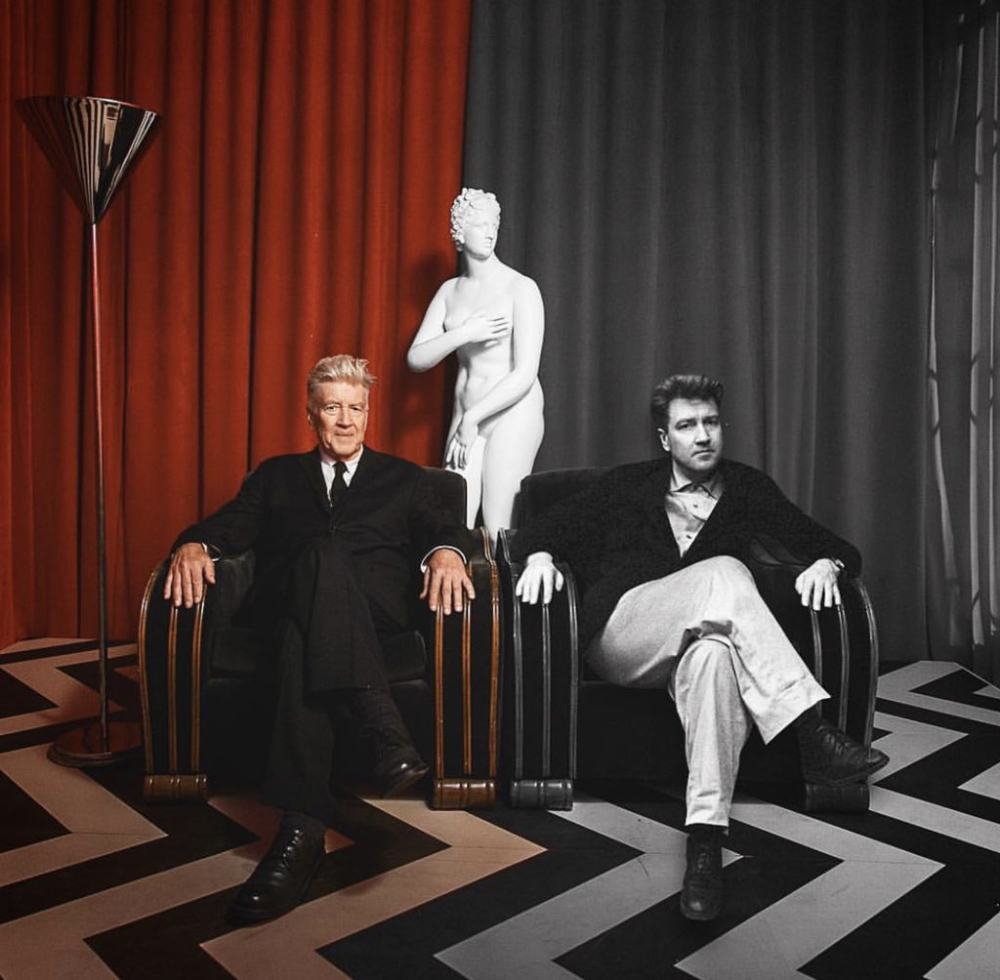

biography
Born in 1946 in Missoula, Montana, David Lynch was raised in small-town America. After high school, he went to Boston to attend the School of the Museum of Fine Arts. Shortly after that, he planned a three-year trip to Europe to work on his art, but didn't take to it and left after 15 days. In 1977, he released his first film Eraserhead (1977), which, although not critically acclaimed, was noticed by many people, including Francis Ford Coppola, who was rumored to have screenings of it for his cast and crew on the Apocalypse Now (1979) set. After a stream of visually striking films such as Blue Velvet (1986), Lost Highway (1997) and Mulholland Drive (2001). These films and others, beginning with Blue Velvet (1986), and including his Twin Peaks (1990) T.V. series, feature what has now been added to signature Lynch features, such as vibrant colors, the use of dreams and montage to connect character thought and multiple emotions into one sequence. In addition to that, since Blue Velvet (1986), Lynch has gained the reputation of one of the foremost auteurs in the film industry, and one of the few living auteurs who continually defies cinematic convention. His films continually represent his ideal that films, representing life, should be complex, and in some cases, inexplicable. Due to his decisive innovation and the beautiful confusion of his films, he will always be recognized as if not one of the greatest film-makers, one of the most original. Lynch is an innovative director, and even if his films aren't necessarily realistic, they are real in their representation of what life is: a confusing, irrational series of events that have little purpose, and one makes one's own interpretation of each event, giving life one's own purpose. Lynch wants his films to resonate emotionally and instinctively, and for every person to relate and find its own understanding. As he said, "Life is very, very confusing, and so films should be allowed to be, too". David Lynch is original. He has done things in film-making that D.W. Griffith did in his day. David Lynch will never stop making beauty on the screen.